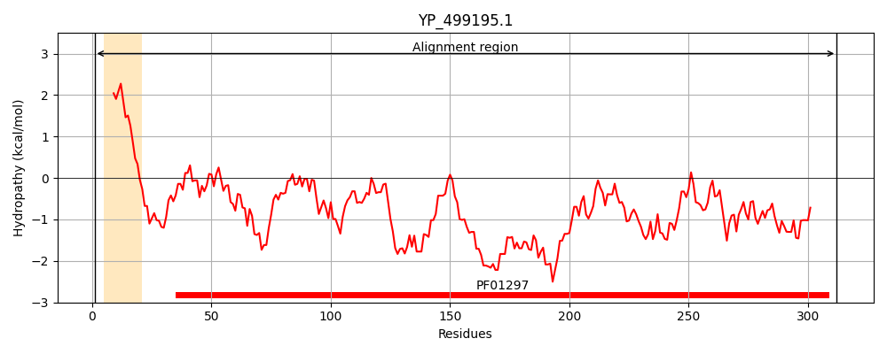
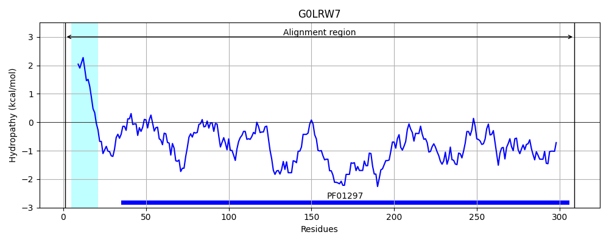
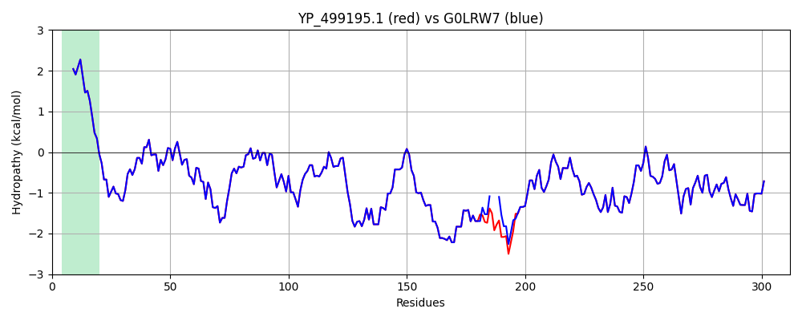

Hit Accession: G0LRW7
Hit TCID: 3.A.1.15.15
Hit Description: gnl|BL_ORD_ID|4557 gnl|TC-DB|G0LRW7|3.A.1.15.15 ABC transporter extracellular binding protein OS=Staphylococcus aureus subsp. aureus LGA251 GN=mntC PE=3 SV=1
Mach Len: 312
e:0.000000
Query TMS Count : 1
Hit TMS Count: 1
TMS-Overlap Score: 0.850000
Predicted Substrates:CHEBI:29035;manganese(2+)
BLAST Alignment:
Score: 1592 , Bit scores: 617 bits, E-value: 0.0e+00, Alignment length: 312, Percentage identity: 99
Query: 1 MKKLVPLLLALLLLVAACGTGGKQSSDKSNGKLKVVTTNSILYDMAKNVGGDNVDIHSIVPVGQDPHEYEVKPKDIKKLTDADVILYNGLNLETGNGWFEKALEQAGKSLKDKKVIAVSKDVKPIYLNGEEGNKDKQDPHAWLSLDNGIKYVKTIQQTFIDNDKKHKADYEKQGNKYIAQLEKLNNDSKDSKDKFNDIPKEQRAMITSEGAFKYFSKQYGITPGYIWEINTEKQGTPEQMRQAIEFVKKHKLKHLLVETSVDKKAMESLSEETKKDIFGEVYTDSIGKEGTKGDSYYKMMKSNIETVHGSMK 312
MKKLVPLLLALLLLVAACGTGGKQSSDKSNGKLKVVTTNSILYDMAKNVGGDNVDIHSIVPVGQDPHEYEVKPKDIKKLTDADVILYNGLNLETGNGWFEKALEQAGKSLKDKKVIAVSKDVKPIYLNGEEGNKDKQDPHAWLSLDNGIKYVKTIQQTFIDNDKKHKADYEKQGNKYIAQLEKLNN DSKDKFNDIPKEQRAMITSEGAFKYFSKQYGITPGYIWEINTEKQGTPEQMRQAIEFVKKHKLKHLLVETSVDKKAMESLSEETKKDIFGEVYTDSIGKEGTKGDSYYKMMKSNIETVHGSMK
Sbjct: 1 MKKLVPLLLALLLLVAACGTGGKQSSDKSNGKLKVVTTNSILYDMAKNVGGDNVDIHSIVPVGQDPHEYEVKPKDIKKLTDADVILYNGLNLETGNGWFEKALEQAGKSLKDKKVIAVSKDVKPIYLNGEEGNKDKQDPHAWLSLDNGIKYVKTIQQTFIDNDKKHKADYEKQGNKYIAQLEKLNN---DSKDKFNDIPKEQRAMITSEGAFKYFSKQYGITPGYIWEINTEKQGTPEQMRQAIEFVKKHKLKHLLVETSVDKKAMESLSEETKKDIFGEVYTDSIGKEGTKGDSYYKMMKSNIETVHGSMK 309 | Protein Hydropathy Plots: |
|---|
|  |  |
Pairwise Alignment-Hydropathy Plot:
|
|---|
|  |